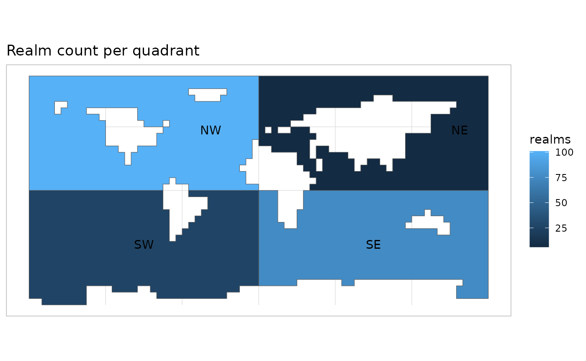

csquares objects can inherit properties from different
parents as illustrated in vignette("csquares-objects").
When a csquares object inherits from the class
data.frame(), you can apply many tidyverse operations while
preserving the csquares properties of the object. When you
create a csquares object from a character(),
you cannot use tidyverse operations as it doesn’t inherit the
data.frame() class. You can check which ancestors your
object has by calling class() as shown in the example
below.
## Required libraries
library(csquares)
library(dplyr)
library(sf)
library(ggplot2)
## create a simple csquares object:
char_csq <- as_csquares(c("1000", "3000"))
## This simple objects has "character" as parent class.
## So tidyverse is out of the question here.
class(char_csq)
#> [1] "csquares" "character" "vctrs_vctr"So let’s start by creating a csquares object that does
inherit from the data.frame() class. It will be used in
examples shown in this vignette.
## create a csquares object with geometries:
orca_csq <- orca |> as_csquares(csquares = "csquares")
## It inherits the class data.frame.
class(orca_csq)
#> [1] "csquares" "data.frame"All tidyverse (and base) methods implemented in the Csquares package
end with the suffix .csquares. You should never call these
functions directly as this will likely produce errors. Instead, load the
packages that implement the generic method (e.g., dplyr for
mutate() and summarise(); tidyr
for pivot_wider(); sf for
st_as_sf() etc.). Then call the method without the
.csquares suffix as shown in the examples below. As you
call the method on csquares objects, the correct
implementation of the generic method will be dispatched
automatically.
The example below shows how you can mutate a column in a
csquares object, then group by a specific column and
summarise it. The csquares properties are grouped automatically. If the
csquares object inherits spatial features, the geometries
are recalculated after summarising.
orca_sum <-
orca_csq |>
## Add geometries to the object
st_as_sf() |>
## use `mutate` to create a column that contains the csquares' quadrant
mutate(quadrant = case_match(substr(csquares |> as.character(), 1L, 1L),
"1" ~ "NE", "3" ~ "SE", "5" ~ "SW", "7" ~ "NW")) |>
## grouping by the column with logical values and summarising
## will reduce the number of rows to 4 (one for each quadrant)
group_by(quadrant) |>
summarise(realms = sum(orcinus_orca), .groups = "keep")
## Note that csquares are automatically concatted and
## geometries recalculated
ggplot(orca_sum) +
geom_sf(aes(fill = realms)) +
geom_sf_text(aes(label = quadrant)) +
coord_sf() +
labs(title = "Realm count per quadrant", x = NULL, y = NULL)
Printing the summarised object shows that there are only two rows left. One for each value in the grouped column.
orca_sum
#> Simple feature collection with 4 features and 3 fields
#> Geometry type: POLYGON
#> Dimension: XY
#> Bounding box: xmin: -180 ymin: -90 xmax: 180 ymax: 90
#> Geodetic CRS: WGS 84
#> # A tibble: 4 × 4
#> # Groups: quadrant [4]
#> quadrant realms csquares geom
#> * <chr> <int> <csquares> <POLYGON [°]>
#> 1 NE 6 1004:1|1004:2|1004:4|1005:1|1005:2|… ((10 35, 5 35, 0 35, 0 4…
#> 2 NW 101 7000:1|7000:2|7001:1|7001:2|7001:3|… ((-180 10, -180 15, -180…
#> 3 SE 76 3000:1|3000:2|3000:3|3000:4|3001:1|… ((0 -55, 0 -50, 0 -45, 0…
#> 4 SW 26 5000:1|5000:2|5000:3|5000:4|5001:1|… ((-180 -85, -180 -80, -1…Joining csquares objects is pretty straightforward and
is only allowed on objects that inherit from the data.frame
class. An exception are csquares objects that inherit from
the stars class (stars::st_as_stars()). On
those objects you are allowed to perform left joins, all other joins are
impossible. See also ?join.
Below you see how you can simply join a data.frame to a
csquares object by the csquares code.
df <- data.frame(foo = "bar", csquares = "3603:3")
left_join(orca_csq, df, by = "csquares") |> print(max = 30)
#> csquares orcinus_orca foo
#> 1 S60 E 30 (5°) FALSE bar
#> 2 S60 W 40 (5°) FALSE <NA>
#> 3 N10 W 90 (5°) TRUE <NA>
#> 4 N 0 W 40 (5°) FALSE <NA>
#> 5 S10 W 70 (5°) TRUE <NA>
#> 6 N 0 W100 (5°) TRUE <NA>
#> 7 N40 E 30 (5°) FALSE <NA>
#> 8 N 0 W100 (5°) TRUE <NA>
#> 9 S 0 W 10 (5°) FALSE <NA>
#> 10 S40 E130 (5°) TRUE <NA>
#> [ reached 'max' / getOption("max.print") -- omitted 2048 rows ]
right_join(orca_csq, df, by = "csquares")
#> csquares orcinus_orca foo
#> 1 S60 E 30 (5°) FALSE barYou are also allowed to join a csquares object to
another csquares by another column that does not represent
the csquares codes:
csq <- data.frame(orcinus_orca = FALSE, csquares = "3603:3") |>
as_csquares(csquares = "csquares")
left_join(orca_csq, csq, by = "orcinus_orca") |> print(max = 30)
#> csquares.x orcinus_orca csquares.y
#> 1 S60 E 30 (5°) FALSE S60 E 30 (5°)
#> 2 S60 W 40 (5°) FALSE S60 E 30 (5°)
#> 3 N10 W 90 (5°) TRUE empty
#> 4 N 0 W 40 (5°) FALSE S60 E 30 (5°)
#> 5 S10 W 70 (5°) TRUE empty
#> 6 N 0 W100 (5°) TRUE empty
#> 7 N40 E 30 (5°) FALSE S60 E 30 (5°)
#> 8 N 0 W100 (5°) TRUE empty
#> 9 S 0 W 10 (5°) FALSE S60 E 30 (5°)
#> 10 S40 E130 (5°) TRUE empty
#> [ reached 'max' / getOption("max.print") -- omitted 2048 rows ]Note that the resulting csquares object has two columns
with csquares codes. Only the column from the left-hand table in the
join is used for further operations. However, you should wonder if this
join is meaningful when mismatching csquares codes are the result.
For some additional csquares specific examples check out
?tidyverse and ?join. For extensive
documentation on tidy operations, consult the tidyverse website.